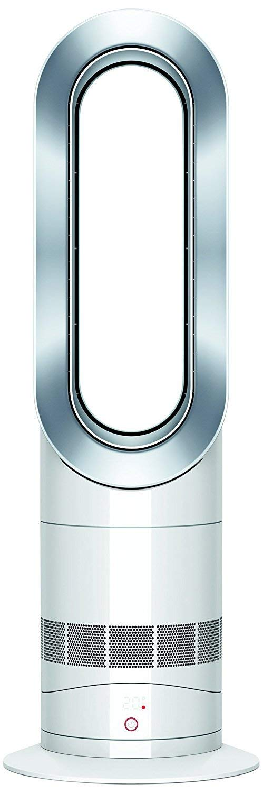
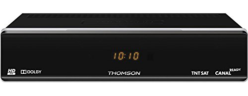
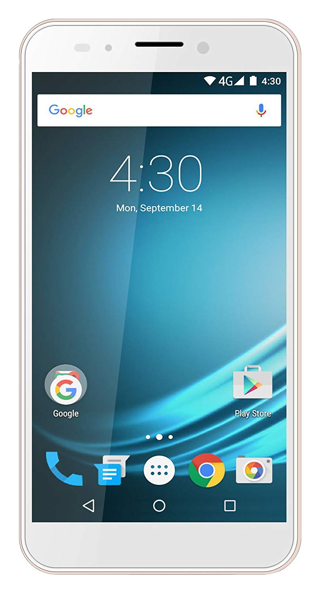
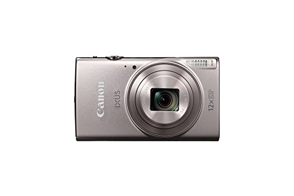
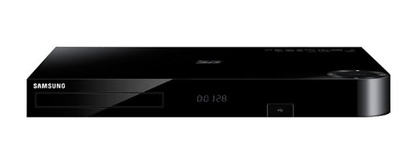
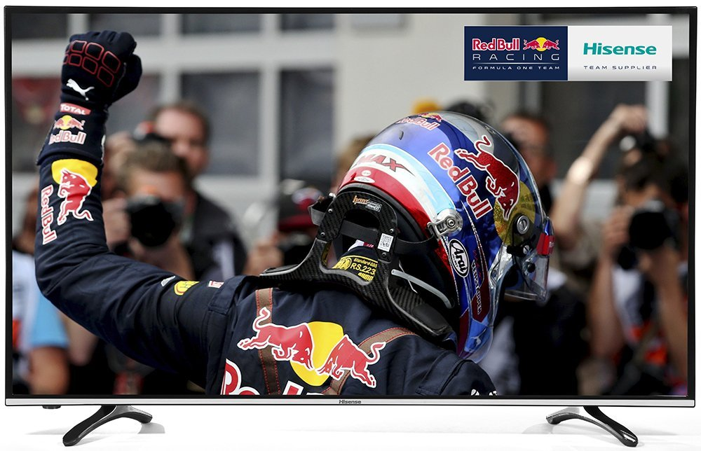
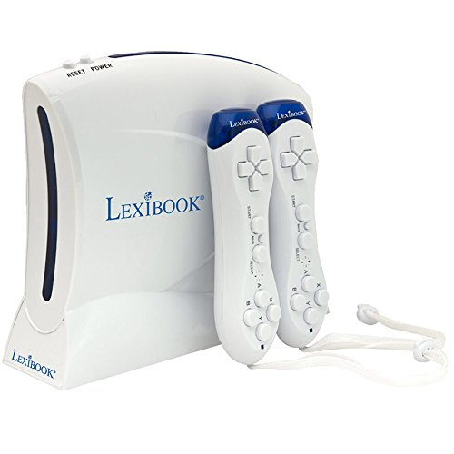

Skip to content
Électroniques
Maison
Beauté
Santé
Cuisine
Outils
Sports
Jouets
Bébés
Mode
Extérieur
Animaux
Jeux Vidéos
Livres
Rechercher :
Électroniques
Maison
Beauté
Santé
Cuisine
Outils
Sports
Jouets
Bébés
Mode
Extérieur
Animaux
Jeux Vidéos
Livres
Rechercher :
Rechercher :

Dyson AM09 – Test et avis
Dermefface FX7 – Test et avis
Hp Probook 470 G3 – Test et avis
Fitbit Charge HR – Test et avis

Thomson THS 804 – Test et avis

Logicom L-Ite 552 – Test et avis
Lenovo Ideapad 310-15ikb – Test et avis
Kodak Pixpro AZ421 – Test et avis
Imprimante Hp Deskjet 3630 – Test et avis
Power 8 Workshop – Test et avis
Nikon Coolpix A300 – Test et avis
Tablette Kidspad 4 – Test et avis

Canon Ixus 285 Hs – Test et avis

Samsung Bd-H8500 – Test et avis

Hisense H43m3000 – Test et avis
Hp Deskjet 3632 – Test et avis
Asus Zenfone Selfie – Test et avis
Asus E402SA – Test et avis
Alcatel Pop 4 – Test et avis
Hisense C1 – Test et avis
P10 Lite – test et avis
Maxtor – Test et avis
Acer Liquid Z6 – Test et avis
Montre Andreas Osten – Test et avis
Cowin E7 – Test et avis
Lenovo Yoga 300-11 – Test et avis
Eken H9 – Test et avis
Polar M200 – Test et avis
Clarisonic Mia 2 – Test et avis
Tomtom Go 5200 – Test et avis
Epson XP 247 – Test et avis
Bio 5 – Test et avis
Makari – Test et avis
Théa Nutrof Total – Test et avis
Danew Konnect 501 – Test et avis
Meizu M5 – Test et avis
Galaxy A7 – Test et avis
Dirt Devil Fusion M611 – Test et avis
Acer Aspire Es 15 – Test et avis
Archos 50 Saphir – Test et avis
Nokia Lumia 435 – Test et avis
Blackview R7 – Test et avis
Nomu S10 – Test et avis
Dell Latitude E6410 – Test et avis
Nikon Coolpix S2900 – Test et avis
GoPro Hero + – Test et avis
Nikon S33 – Test et avis
Doro Primo 413 – Test et avis
Nikon Coolpix S9900 – Test et avis
Husqvarna 135 – Test et avis
Asics Gel Pulse 8 – Test et avis
Epson XP 442 – Test et avis
Sony DSC H400 – Test et avis
Kodak AZ361 – Test et avis
Alcatel Idol 3 – Test et avis
Dyson DC45 – Test et avis

Console Lexibook 200 Jeux – Test et avis
Honor 4X – Test et avis
Gooweel M3 – Test et avis
Hair 30 – Test et avis
Nikon Coolpix A10 – Test et avis
Brother CS10 – Test et avis
Lenovo Thinkpad T420 – Test et avis
Harman Kardon Onyx Studio 3 – Test et avis
Parrot Minikit Neo 2 HD – Test et avis
Amibot Pure H2o – Test et avis
Tomtom Via 62 – Test et avis
Garrett Ace 250 – Test et avis
Zuk Z1 – Test et avis
Nikon D3400 – Test et avis
Epson Workforce WF-7620dtwf – Test et avis
Robot Fagor Grand Chef – Test et avis
Epilateur Philips Satinelle – Test et avis
Crosscall Spider X1 – Test et avis
Thermostat Netatmo – Test et avis
Nikon Coolpix A100 – Test et avis
Elephone S7 – Test et avis
HP Envy 4524 – Test et avis
Sensorwake – Test et avis
Yamaha P 115 – Test et avis
Asics Gel Cumulus 18 – Test et avis
ZTE Blade V7 Lite – Test et avis
Unotec XTR Pro 4 – Test et avis
Dell Latitude E6420 – Test et avis
Office 365 – Test et avis
Intel Core I5 – Test et avis
Canon Powershot SX720 HS – Test et avis
HP Stream 13 – Test et avis
Intel Atom Z3735F – Test et avis
Wonder Core 2 – Test et avis
Meizu Pro 6 – Test et avis
Braun Silk Epil 5 – Test et avis
Beurer IPL 9000 – Test et avis
Moto G5 – Test et avis
Cat S40 – Test et avis
Epson Xp 540 – Test et avis
Dell Vostro 3558 – Test et avis
Thomson Neo14 – Test et avis
Polar A300 – Test et avis
Plus de top 10s
Retour